CMOS-RAM-Platine
Haben Sie schon einmal Ihr Programm auf ein EPROM gebrannt und sich anschließend geärgert, weil doch noch eine kleine Verbesserung nötig war? Das CMOS-RAM schafft Abhilfe. Was es damit auf sich hat, wie es funktioniert und wie Sie es selbst bauen können, wollen wir Ihnen erklären.
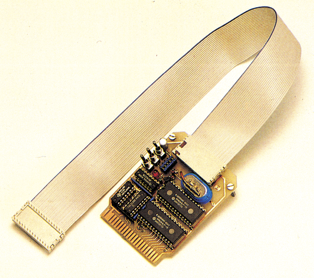
Wer das Betriebssystem eines Computers schon einmal verändert hat, wird über die beiden Möglichkeiten der Speicherung (Diskette oder EPROM) nicht gerade glücklich gewesen sein. Das EPROM ist für die Entwicklungsphase eine ungünstige Lösung und das Arbeiten mit Diskette erweist sich für diesen Fall als eine aufwendige Angelegenheit. Auch wenn Sie in den nächsten Wochen beispielsweise vorwiegend mit Ihrem Monitor-Programm arbeiten wollen, kann Ihnen das dauernde Laden von Diskette schnell lästig werden. Dafür ein
EPROM zu brennen, ist nicht gerade die billigste und schnellste Lösung.
Das akkugepufferte CMOS-RAM (großes Foto) löst die eben genannten Probleme und viele weitere auf überraschend einfache Weise.
Prinzipiell kann das CMOS-RAM wie jedes andere RAM beschrieben und gelesen werden. Es verliert aber, wie ein RAM, beim Ausschalten nicht den Speicherinhalt.
Auf diese Weise können Sie die verschiedensten EPROMs, PROMs und ROMs mit dem CMOS-RAM simulieren. Im einzelnen ergeben sich folgende Möglichkeiten:
— Simulation von ROM-Modulen am C 64 in den Bereichen $8000 bis $9FFF, $A000 bis $BFFF und $8000 bis $BFFF
— Simulation der EPROMs 2532, 2716 (=2516 von Texas Instruments), 2732, 2764 und 27128 sowie pin- und funktionskompatibler Typen
— Simulation der PROMs 2332 und 2364, sowie kompatibler Typen.
Dabei haben Sie sogar die Wahl, das CMOS-RAM entweder in den Expansion-Port zu stecken oder es über ein Kabel mit DIL-Stecker direkt an den IC-Sockel anzuschließen — anstelle des jeweiligen Speicherbausteins.
Wegen der Fähigkeit, die verschiedensten Speicherbausteine zu simulieren, wollen wir das CMOS-RAM ab jetzt RoSi (ROM-Simulator) nennen.
Für den ersten Überblick ist es ratsam, sich an dem Blockschaltplan in Bild 1 zu orientieren. An dieser Stelle wollen wir auch erwähnen, daß alle Abbildungen inklusive Layout mit dem C 64 entwickelt wurden. Im Blockschaltplan sind die beiden Anschlußmöglichkeiten dargestellt — links der Expansion-Port, rechts ein ROM-Sockel. Wie Sie sehen, sind Adreß- und Datenbus durchgeschleift. Der entscheidende Unterschied liegt bei den Kontrollbussen.
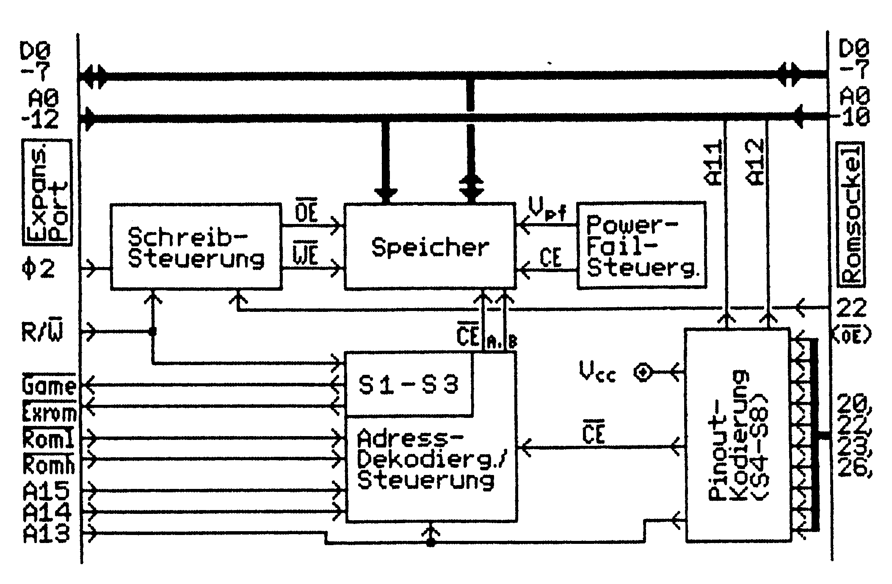
Schaltungsübersicht
In Bild 2 können Sie erkennen, wie der Kontrollbus für einen Speicherbaustein aufgebaut ist. Über das Chipauswahlsignal (CE, CE) wird der entsprechende Speicherbaustein angesprochen und aktiviert. Das Ausgangsfreigabesignal (OE) bestimmt, ob der adressierte Speicherinhalt auf dem Datenbus erscheint oder nicht.
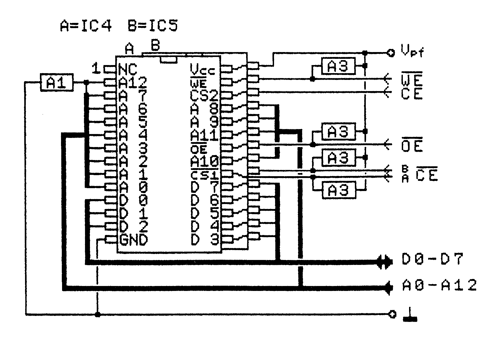
Bei RAMs kommt gegenüber ROMs noch ein Schreibsignal (WE) hinzu, dessen Logikpegel signalisiert, ob gelesen oder geschrieben wird.
Hier noch eine Anmerkung zu den Signalbezeichnungen. Es wird immer der aktive Logikpegel gekennzeichnet. Ist eine Funktion mit dem Signalpegel L (Low) aktiv, so findet man einen Querstrich über der Signalbezeichnung.
Die Kontrollsignale müssen natürlich vom steuernden System zur Verfügung gestellt werden.
Am Expansion-Port übernimmt der C 64 die Kontrolle. Aus dem Systemtakt φ₂ und dem R/W-Signal des Prozessors werden im Block »Schreibsteuerung« die Signale OE und WE gewonnen.
Die Adreßleitungen A13 bis A15 werden im Block »Adreß-Decodierung/Steuerung« zu CEa,b decodiert und bestimmen, in welchem Adreßbereich das CMOS-RAM eingeblendet ist. Die Signale GAME, EXROM, ROML und ROMH bilden zusätzliche Bedingungen für die richtige Auswahl des Speicherbausteins.
Ist RoSi direkt mit einem ROM-Sockel verbunden, so wird kein R/W-Signal benötigt. Für die richtige Schreibsteuerung sorgt das OE-Signal an Pin 22.
Mit der Pinout-Codierung wird RoSi an die unterschiedlichen Pinbelegungen der simulierbaren Speicherbausteine angepaßt.
Schließlich ist da noch der Block »Power-Fail-Steuerung«, der ständig die Betriebsspannung überwacht und daraus zwei Funktionen ableitet. Zum einen bestimmt er darüber, ob der Speicher vom Akku oder vom Computer mit Strom versorgt wird. Bei einer Versorgung durch den Computer wird der Akku gleichzeitig geladen. Zum anderen sorgt der Block dafür, daß beim Unterschreiten der Betriebsspannung (Computer ausgeschaltet) keine Daten abrufbar sind.
Die Schaltung im Detail
Nach dem Überblick nun zu den Details. Fast in allen Teilschaltbildern tauchen einige Widerstände auf, die scheinbar unmotiviert von IC-Logikeingängen nach Plus oder Masse gelegt sind. Dies sind sogenannte »Pull-up«- oder »Pull-down«-Widerstände. Sie sorgen dafür, daß der jeweils angeschlossene IC-Eingang auf einen definierten Pegel gelegt wird. Dabei sind Widerstände mit gleichem Wert zu einem Array (A1, A2 oder A3) zusammengefaßt.
Speicherblock: In Bild 2 sieht man die Schaltung des Speichers. Zwei CMOS-RAMs sind einfach parallel geschaltet. Auf diese Weise ergibt sich eine Speicherkapazität von 16 KByte. Die Chip-Enable-Signale CEa,b müssen allerdings getrennt sein.
Der Pull-down-Widerstand an der Adreßleitung A12 sorgt dafür, daß bei der Simulation von 4-KByte-ROMs nur der untere Adreßbereich des CMOS-RAMs aktiv ist. Die Pull-up-Widerstände an den Kontrolleingängen der Speicherbausteine sind unbedingt notwendig, um bei ausgeschaltetem Computer einen Verlust der Speicherdaten zu verhindern.
Der Stromversorgungsanschluß der ICs erhält hier die Bezeichnung Vpf (normalerweise Vcc), denn so läßt er sich von der Systemversorgung unterscheiden.
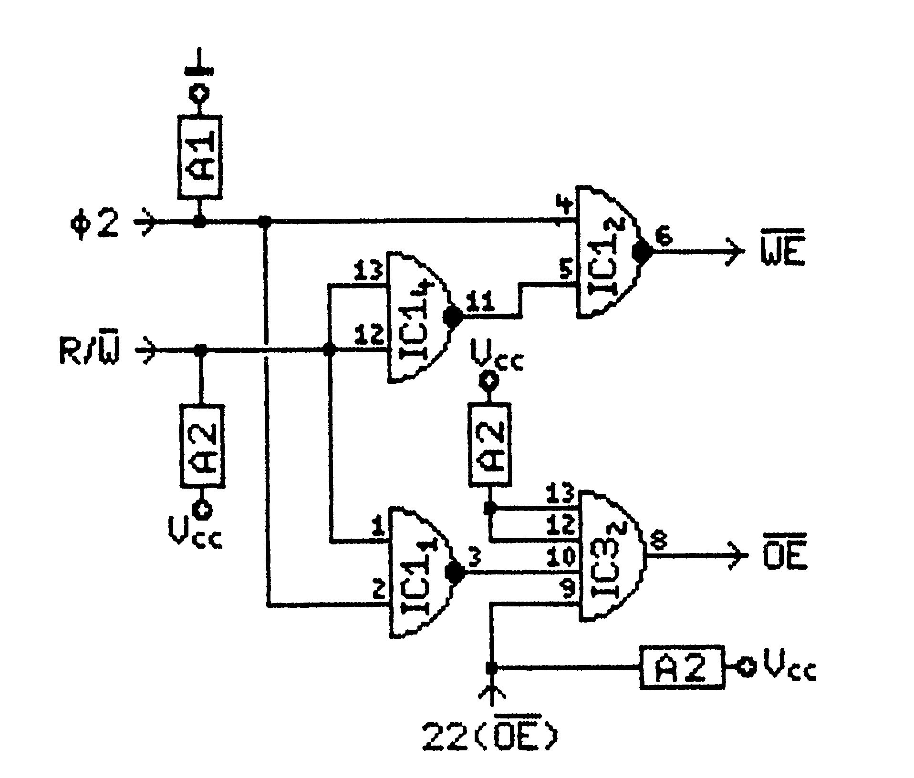
Schreibsteuerung: Die Schreibsteuerung (Bild 3) sieht auf den ersten Blick vielleicht etwas konfus aus, läßt sich aber schnell »aufdröseln«. Schreibzugriffe (WE=L) dürfen in einem 6502-System nur auftreten, wenn φ₂=H ist. Das wird durch Verknüpfung von φ₂ und R/W mittels der NAND-Gatter 2 und 4 erreicht. Gatter 4 dient dabei nur als Inverter. Die Pull-up/Pull-down-Widerstände aus den Arrays A2/A1 ziehen WE bei ungesteuerten Gattern auf High. In vielen Systemen werden die OE-Leitungen einfach fest auf Low oder an die entsprechenden CE-Leitungen gelegt. Da die CMOS-RAMs im Schreibbetrieb einfach parallel zu den C-64-RAMs liegen, würde es hier jedoch zwangsläufig zur Datenkollision auf dem Bus kommen. Deshalb wird der Output über das NAND-Gatter 1 nur im Lesebetrieb freigegeben. Das AND-Gatter 2 von IC 3 läßt wahlweise das so gewonnene OE-Signal oder das vom ROM-Sockel kommende OE-Signal zum RAM.
Adreßdecodierung: Nun zur Adreßdecodierung in Bild 4. Die drei höchstwertigen Adreßleitungen A13 bis A15 liegen an den Adreßeingängen eines 3-Bit-Binärdecoders. Dieser macht daraus an seinen Ausgängen (Y0 bis Y7) CE-Signale für jeweils 8-
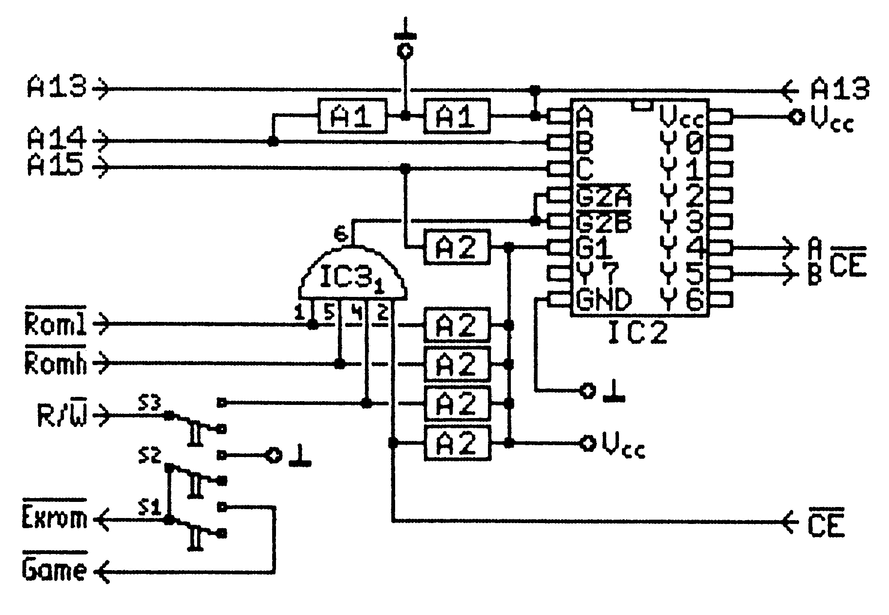
KByte-Gruppen. Die CMOS-RAMs werden von Y4 und Y5 angesprochen. Dadurch liegen sie im Adreßbereich $8000 bis $BFFF. Es genügt hier nicht, die am Expansion-Port vorhandenen Signale ROML und ROMH zu verwenden, da sie nur im Lesebetrieb wirksam sind. Außerdem ist für die ROM-Simulation ohnehin eine Decodierung notwendig. Die Pull-up/down-Widerstände an den Adreßleitungen sorgen in diesem Fall dafür, daß nur die untere Speicherhälfte angesprochen wird.
Mit der Decodiererei allein ist es aber noch nicht getan, denn es müssen noch weitere Bedingungen eingehalten werden. Dazu dient das AND-Gatter von IC 3, dessen Ausgang an den Low-aktiven Enable-Eingängen G2A und G2B des Decoders liegt. Nur wenn mindestens einer der Gattereingänge Low ist und gleichzeitig die Adresse im Bereich $8000 bis $BFFF liegt, werden die RAMs angesprochen. In folgenden Fällen ist dies gegeben:
— ROML oder ROMH werden Low (Modul-Simulation)
— CE von einem ROM-Sockel wird Low (ROM-Simulation)
— R/W wird Low (Schreibbetrieb)
Die letzte Variante ist nur möglich, wenn der Schreibschalter S3 geschlossen ist.
Die Schalter: Jetzt kommen wir zu den mit EXROM und GAME verbundenen Schaltern S1 und S2 (Bild 5). Sie dienen dazu, den C 64 darüber in Kenntnis zu setzen, ob ein ROM-Modul vorhanden ist und in welchem Adreßbereich es liegt. Die beiden Schalter sind so verdrahtet, daß die verbotene Kombination EXROM=H und GAME=L nicht möglich ist.
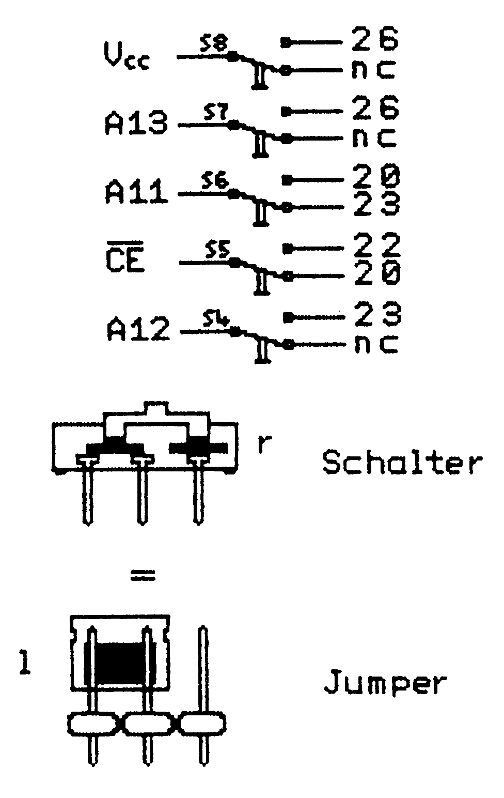
Die Schaltung des Blocks »Pinout-Codierung« in Bild 7 besteht aus fünf Umschaltern oder Steckbrücken (S4 bis S8) und bestimmt das zu simulierende IC.
Spannungsversorgung: Die »Power-Fail-Steuerung« (Bild 6) ist ebenso einfach wie wirksam. Sie muß bei absinkender Betriebsspannung die CMOS-RAMs schnell genug in den inaktiven Zustand versetzen, damit keine unkontrollierten Informationsänderungen vorkommen. Dazu liegt die Basis des PNP-Transistors T1 an einem Spannungsteiler aus R3 und R2. T1 wird bei voller Betriebsspannung (Vcc) aufgesteuert und zieht den High-aktiven CE-Eingang der RAMs nach Plus. Die LED im Spannungsteiler dient neben den Anzeigezwecken dazu, den Arbeitsbereich von T1 zu verbessern. Sinkt Vcc unter einen bestimmten Wert ab, so sperrt T1. CE liegt dann über R1 auf Low und die RAMs sind nicht ansprechbar. Durch den Akku verlieren die CMOS-RAMs aber nicht die Speicherinhalte. Im Betrieb wird der Akku über D1 und R4 geladen, während er bei fehlender Versorgungsspannung die RAMs über D2 mit etwa 2,2 bis 3,4V versorgt. Mit dem Schalter S9 kann der Akku abgeschaltet werden, um eine Tiefentladung bei längerer Lagerung zu verhindern.
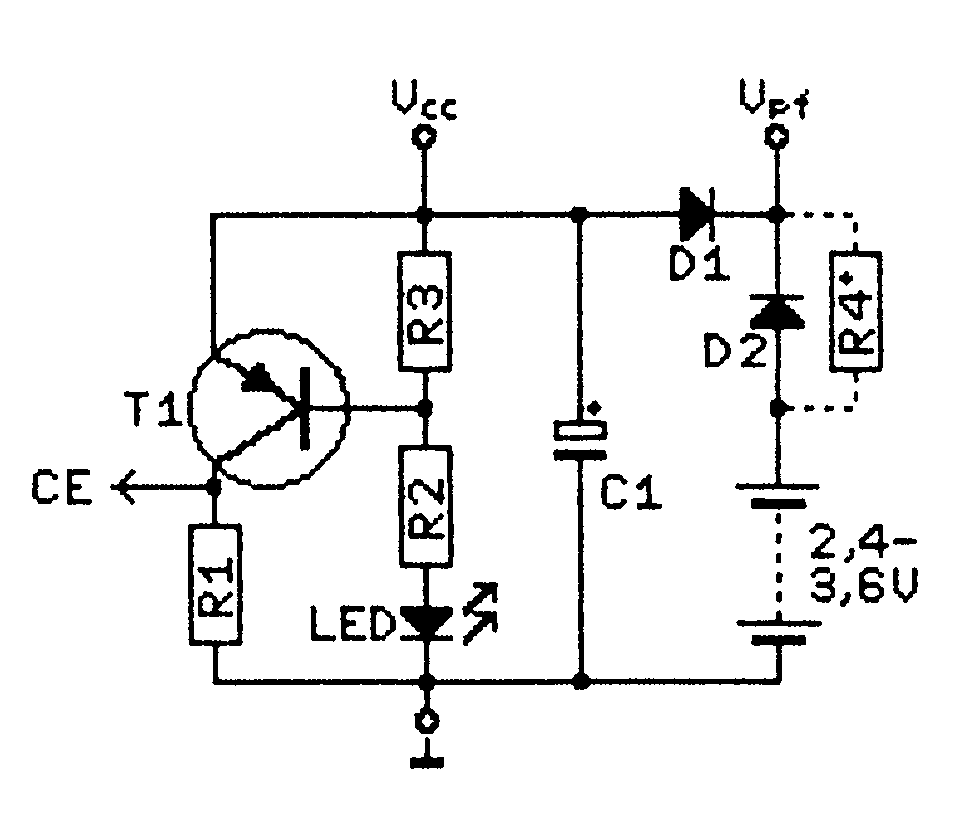
Bauteile: Der Aufbau der Schaltung fängt natürlich mit dem Beschaffen der Bauteile an. Die in Tabelle 4 abgebildete Bestückungsliste gibt Ihnen einen hilfreichen Überblick. Das Layout für die Herstellung der Platine finden Sie in den Bildern 7 und 8. Es entstand übrigens vollständig auf dem C 64, wie auch alle anderen Bilder.
Die Beschaffung der elektronischen Bauteile (ICs, Widerstände, etc.) dürfte keine größeren Schwierigkeiten machen. Bei der LED muß man sich wegen der erforderlichen Durchlaßspannung an den in der Stückliste angegebenen Typ halten.
Für alle ICs empfehlen sich Sockel, nach Möglichkeit Präzisionsausführungen. Bei einigen Bauteilen ist auf ihre Polung gemäß Bestückungsplan (Bild 9) zu achten. ICs haben einen Punkt an Pin 1 oder eine Kerbe an derselben Stirnseite. Die Pinbelegung der anderen gepolten Bauelemente können Sie dem Bild 10 entnehmen. Wie man bei Beschaffungsschwierigkeiten der Widerstandsarrays diese aus acht Einzelwiderständen selbst herstellt, finden Sie ebenfalls dort.
Nun zum Akku. Hier sind die Abmessungen wichtig. Die zur Verfügung stehende Grundfläche auf der Platine beträgt etwa 15x33 mm. Der Pluspol liegt in jedem Fall bei D2, wie im Bestückungsplan ersichtlich, für den Minuspol stehen verschiedene Lötpunkte zur Auswahl. Die Kapazität des Akkus ist nicht so wichtig, da der Stand-By-Strom der Schaltung im Mikroampere-Bereich liegt und damit etwa die Größenordnung der Selbstentladung hat. Ohne weiteres können Sie statt eines Akkus auch eine Trockenbatterie verwenden. Gut geeignet sind hier Lithiumzellen zum Einlöten. Der Betrieb mit Lithiumzellen empfiehlt sich besonders, wenn RoSi nicht häufig benutzt wird. Sie sind auch umweltfreundlich und sichern die Daten über Jahre. Bei Batteriebetrieb kann der Ladewiderstand R4 wegfallen. Für Akkus sollte
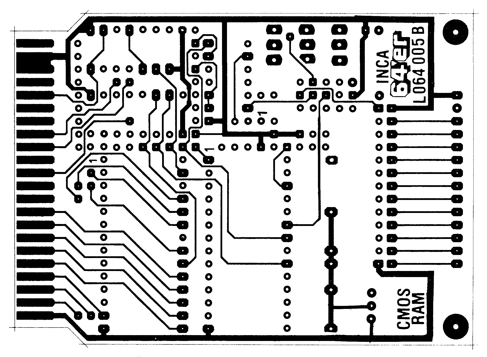
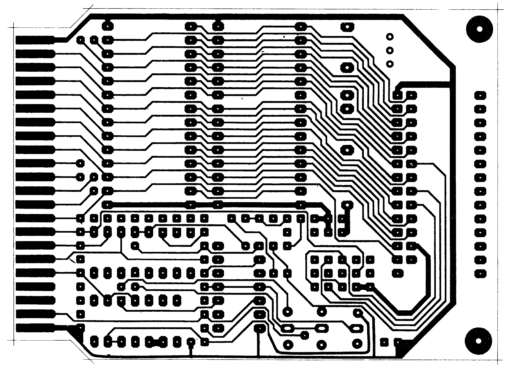
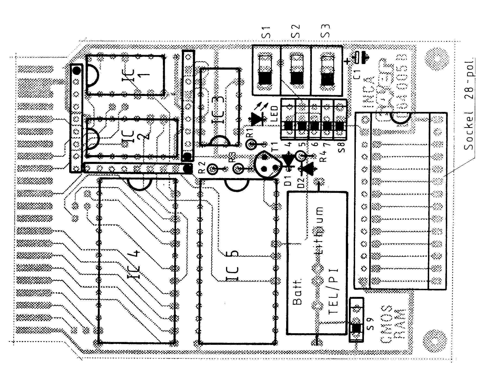
der Ladestrom etwa 1/50 der Akku-Nennkapazität betragen. R4 errechnet sich demnach wie folgt: R4 (in KΩ) = (4,5V - Ua)/I, wobei Ua die Spannung in Volt des verwendeten Akkus ist und I der gewünschte Ladestrom in mA. Beispiel für Akku 2,4V, 150mAh: I = (150/50)mA = 3mA; R4 = (4,5V - 2,4V)/3mA = 0,7KΩ.
Die Schalter S1 bis S3 sind handelsübliche Schiebe-Umschalter, die anstelle der im großen Foto abgebildeten Kipphebel-Umschalter einzusetzen sind. S4 bis S8 sind einpolige Umschalter im
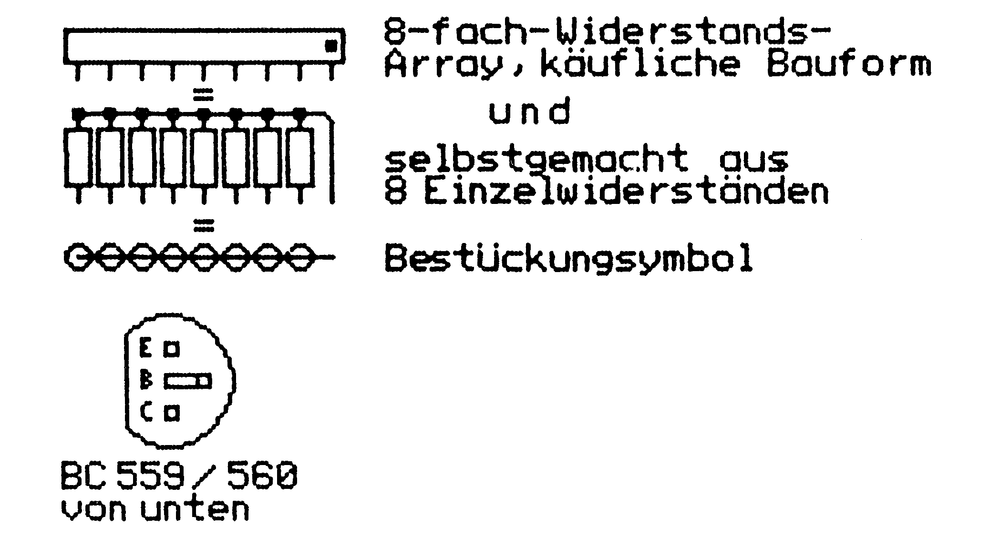
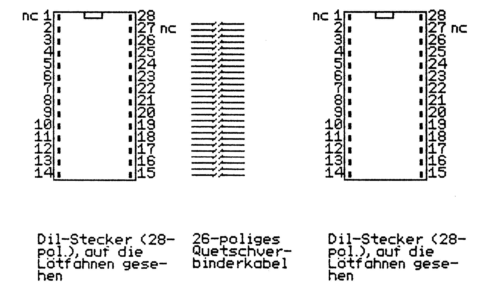
DIL-Format. Diese Spezialbauform ist wegen des gedrängten Aufbaus nötig, jedoch nicht überall erhältlich. Sie können die Schalter durch Stiftleisten mit Steckbrücken (Jumper) ersetzen. Eine Lösung, die preiswerter ist und deren Beschaffung keine Probleme verursacht. Diese Variante ist auch im Foto (Seite 38) zu sehen. Sie müssen aber beachten, daß sich die Schalterfunktionen (siehe Tabelle 1) dabei umkehren.
Da keinerlei Abgleich erforderlich ist und sich die Anzahl der Bauteile in Grenzen hält, ist der Aufbau nicht besonders kritisch. Aus dem Bestückungsplan (Bild 9) ersehen Sie die Lage der einzelnen Bauteile. Ein wenig Löterfahrung sollten Sie jedoch schon haben. Wichtig ist auch ein Lötkolben mit dünner Spitze, der wirklich heiß ist. Ein heißer Lötkolben läßt das Zinn schnell fließen und führt zu kurzen Lötzeiten.
Da mit einer zweiten Stromquelle (Akku) gearbeitet wird, sollten Sie besonders auf die richtige Polung der Bauteile achten, um stärkere Rauchentwicklung im Raum zu vermeiden.
Alle Widerstände und Dioden werden stehend eingelötet.
Bei der Bestückungsreihenfolge kann man sich an die Reihenfolge des Abschnitts »Bauteile« halten. In jedem Fall sollte der Akku das zuletzt eingesetzte Bauteil sein!
Ein eventueller Fehler läßt sich mit Hilfe der Schaltungsbeschreibung schnell einkreisen.
Es fehlt noch die Steckverbindung über Flachbandkabel zum ROM-Sockel. Probleme dürften bei der Beschaffung des 28poligen IC-Sockels und der DIL-Quetschstecker nebst Flachbandkabel nicht auftreten. Wenn Ihr Geldbeutel nicht groß genug ist, können Sie auch Sparversionen bauen. Wenn Sie sämtliche Funktionen benötigen, aber nur EPROMs bis 8 KByte und ROM-Module nur im Bereich $8000 bis $9FFF simulieren wollen, können Sie das zweite RAM (IC5) weglassen. In diesem Fall wird auch S1 nicht benötigt. Wer keine Verwendung für die direkte ROM-Simulation hat, kann zusätzlich durch Fortlassen von S4 bis S8 und der kompletten Ausgangssteckverbindung so einiges sparen.
Noch etwas zur Pinbelegung der DIL-Stecker (Bild 11). Blickt man vom C 64 aus auf die im Expansion-Port steckende Platine, in die wiederum das Flachbandkabel hinten eingesteckt ist, so liegt Pin 1 der beiden DIL-Stecker jeweils auf der linken Seite (also genau wie bei den RAMs). Am besten gleich kennzeichnen. Die Kabellänge sollte zirka 30 cm betragen. Längen über 50 cm sollten Sie wegen der Kabelkapazitäten in Verbindung mit der hohen Taktfrequenz vermeiden.
Das Anquetschen des Kabels können Sie manchmal im Elektronik-Geschäft erledigen lassen, oder Sie machen es selbst im Schraubstock mit Hilfe einer Vorlage auf der Pinseite. Aber bitte mit Gefühl, damit die Stecker noch heil bleiben.
In die äußeren Ecken der Platine sollten Sie Löcher bohren und Stützschrauben der Größe M3x20 einsetzen, wie es im Bild auf Seite 38 zu sehen ist. Der Expansion-Port-Stecker wird es Ihnen danken.
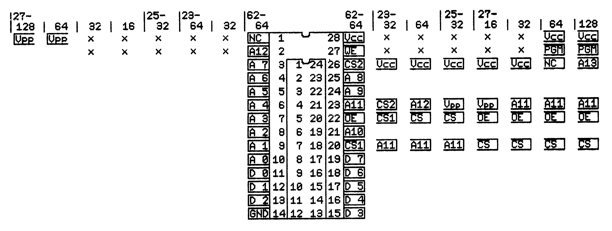
So gehen Sie mit RoSi um
Nun wollen wir erläutern, wie Sie mit RoSi arbeiten können. Fangen wir mit der Modul-Simulation an.
Modul-Simulation: Für diese Betriebsart wird die Platine in den Expansion-Port des ausgeschalteten C 64 gesteckt, mit der Bauteileseite nach oben. Schalten Sie den Computer jetzt wieder ein. Die Schalter S1 und S2 bestimmen nun die logischen Pegel an den Leitungen EXROM und GAME des C 64. Wie schon erwähnt, sind sie so verschaltet, daß die Kombination EXROM=1 und GAME=0 nicht einstellbar ist, denn dies würde unweigerlich zu einem Absturz beim C 64 führen. Nun zu den Funktionen der Schalter. S2 schaltet RoSi aus (l) oder ein (r). S1 bestimmt den Adreßbereich, in den die Karte eingeblendet wird (siehe Tabellen 1 bis 3). Schalter S3 entscheidet unabhängig von S1 und S2, ob ein Schreibzugriff im Adreßbereich $8000 bis $BFFF auf das CMOS-RAM möglich ist.
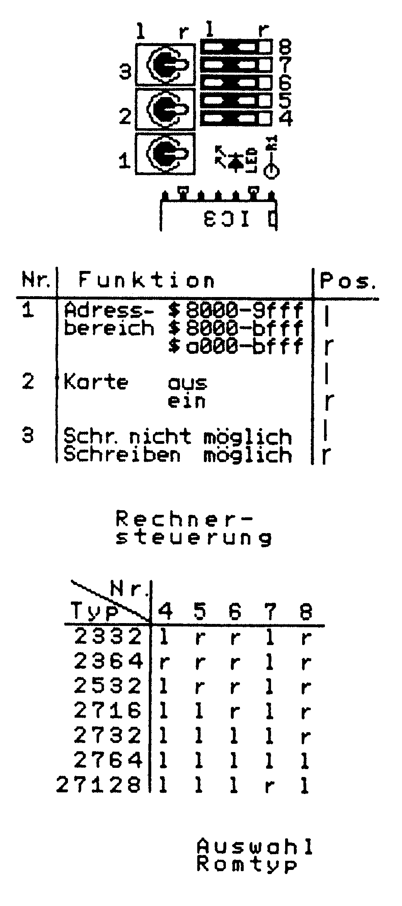
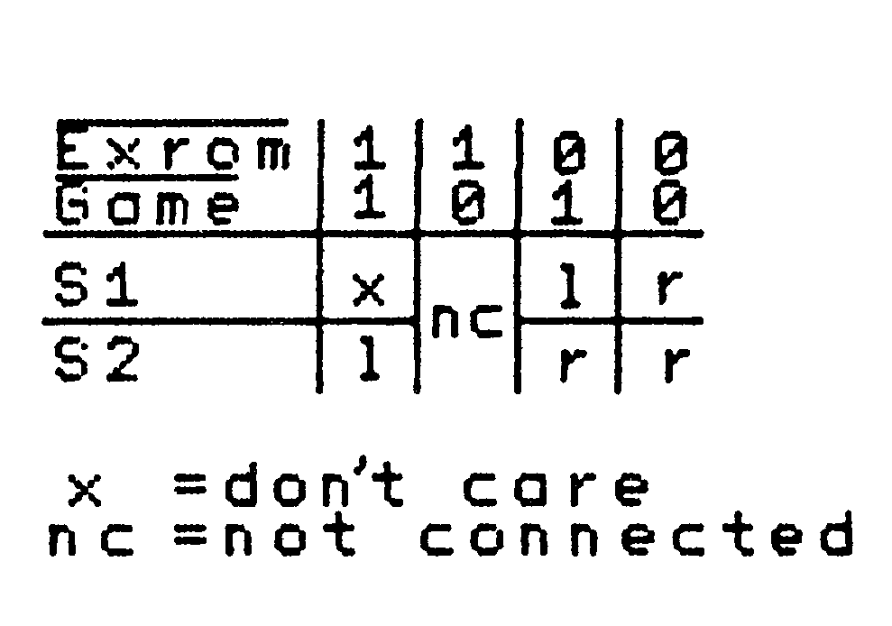
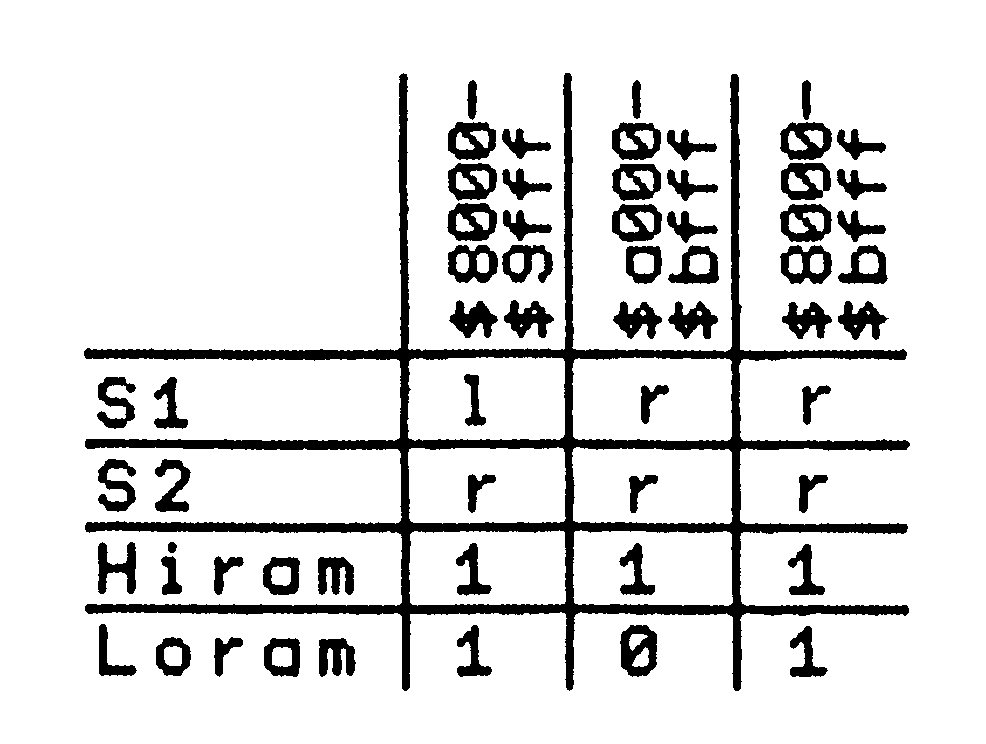
Steht S3 in Stellung »l«, so kann der Inhalt des CMOS-RAMs nicht verändert werden. Es wirkt dann wie ein ROM, wenn es mit S2 eingeblendet ist. Steht S3 in Stellung »r«, dann wird alles, was im Bereich $8000 bis $BFFF ins RAM geschrieben wird, gleichzeitig ins CMOS-RAM geschrieben, auch wenn RoSi nicht mit S2 eingeblendet ist.
Beispiel: Ein Beispiel bringt mehr als tausend Worte. Also: Angenommen, Sie wollen ein 16 KByte langes Autostart-Programm (beispielsweise eine in Maschinensprache geschriebene Textverarbeitung) in RoSi unterbringen, um es jederzeit bei Bedarf einblenden zu können. Dazu stellen Sie S2 auf »l« (RoSi ausgeblendet) und S3 auf »r« (Schreiben möglich). Jetzt greifen Sie zu Ihrer Programmdiskette, laden das Programm mit LOAD "Name",8,1 (die Startadresse $8000 muß natürlich stimmen). Danach stellen Sie S3 wieder auf »l« (Schreiben nicht möglich), um RoSis Inhalt zu sichern. Nun haben Sie ein Modul, das sich exakt wie eine der handelsüblichen EPROM-Bänke verhält.
Blenden Sie den Bereich $8000 bis $BFFF mit S1 und S2 ein und — Ihr C 64 stürzt ordnungsgemäß ab, denn der Prozessor »fällt« aus dem Basic irgendwohin in das Programm. Wenn das Autostart-Programm in RoSi in Ordnung ist, und Sie glücklicher Besitzer eines Resettasters sind, bringt nun ein Reset das Programm zum Laufen.
Hatte Ihr Programm keinen Autostart, so können Sie mit dem SYS-Befehl das Programm starten. Sie dürfen dabei allerdings nicht den Bereich $A000 bis $BFFF eingeblendet haben, weil dann der Basic-Interpreter abgeschaltet ist und der SYS-Befehl nicht mehr ausgeführt werden kann.
Fast genauso einfach ist es, RoSis Inhalt auf Diskette zu speichern. Allerdings empfiehlt sich hierfür ein Monitor, da man in Basic nicht beliebige Adreßbereiche speichern kann. Für das obige Beispiel ergibt sich folgende Vorgehensweise:
Laden Sie einen Monitor, der außerhalb des Bereichs $8000 bis $BFFF liegt und starten Sie ihn. Jetzt blenden Sie RoSi ein, indem Sie S1 und S2 auf »l« legen. Nun speichern Sie den Inhalt von RoSi mit s"name",08,8000,c000 ab. Je nach Monitor kann auch eine andere Syntax notwendig sein.
Eine prinzipiell gleiche Vorgehensweise ergibt sich für Teile dieses Adreßbereichs, nur die Stellung der Schalter S1 und S2 und der Prozessor-Port müssen jeweils angepaßt werden (Tabellen 1, 2 und 3). Wenn man zum Beispiel nur im Bereich $8000 bis $9FFF operiert, braucht man nicht mal unbedingt einen Monitor, weil das Basic eingeschaltet bleibt. Ein paar Experimente beseitigen schnell alle Unklarheit, so daß Ihrer selbstgemachten Basic-Erweiterung nichts mehr im Wege steht.
ROM-Simulation
Die Pinbelegung der ROMs und EPROMs, die mit RoSi simuliert werden können, finden Sie in Bild 12 neben der des CMOS-RAMs aufgeführt. Es sind nur die Anschlüsse mehrfach abgebildet, die bei den verschiedenen Typen unterschiedlich belegt sind.
Die Handhabung der ROM-Simulation ist ebenso einfach wie die der Modul-Simulation. Zuerst wird der Inhalt des zu simulierenden ROMs nach der Anleitung im vorigen Abschnitt in RoSi untergebracht. Die Stellung der Schalter S4 bis S8 ist hier noch unerheblich. Jede der in Tabelle 1 aufgeführten
Kombinationen ist möglich. Ein Tip: die Platine wurde so ausgelegt, daß das am meisten verbreitete EPROM 2764 eine leicht zu merkende Einstellung hat, nämlich S4 bis S8 alle in Stellung »l«. Wenn die Software in RoSi untergebracht ist, wird sie wieder mittels S3 geschützt. Anschließend müssen Sie den Computer ausschalten und die Platine aus dem Expansion-Port ziehen.
Nie darf RoSi gleichzeitig mit dem Expansion-Port und über Kabel mit einem ROM-Sockel verbunden sein!
Jetzt stellen Sie nach Tabelle 1 den gewünschten ROM-Typ mit S4 bis S8 ein. Das Flachbandkabel stecken Sie bei ausgeschaltetem Gerät mit dem DIL-Stecker in den Sockel des zu simulierenden ROMs. Handelt es sich um einen 24poligen Sockel, so wird der Stecker bündig mit der dem Pin 1 gegenüberliegenden Seite eingesteckt, so daß die Pins 1, 2, 27 und 28 überstehen. Bei eng bestückten Platinen, die keinen überstehenden Stecker erlauben, können Sie sich mit einem 24poligen IC-Sockel behelfen, der noch zwischen den leeren Sockel und den DIL-Stecker eingesteckt wird. Jetzt stellen Sie die Verbindung mit RoSi her und schalten das Gerät wieder ein. Das war's!
Auch hierfür wieder ein Beispiel.
Beispiel: Angenommen, Sie wollen das Schriftbild Ihres Druckers ändern. Sie schalten ihn aus und zerlegen ihn, bis die Platine vor Ihnen liegt. Auf dieser befindet sich, wie das Leben so spielt, ein ROM-Sockel mit einem EPROM des Typs 2764. Hocherfreut hebeln Sie dieses aus der Fassung und lesen seinen Inhalt mit einem EPROMmer oder mit Hilfe von Monitor und EPROM-Bank in den C 64 ein. Mit dem Monitor können Sie nun den Zeichensatz suchen und modifizieren. Dann wird er in RoSi untergebracht. Schalten Sie jetzt den Computer aus und ziehen Sie die Platine aus dem Expansion-Port. Nachdem Sie den EPROM-Typ 2764 eingestellt haben, stellen Sie die Verbindung zwischen RoSi und dem ROM-Sockel im Drucker her. Dann schalten Sie den Drucker wieder ein und — wenn Sie nicht versehentlich das Betriebssystem mit geändert haben — können Sie nun bei einem Probedruck den neuen Zeichensatz bewundern. Sagt er Ihnen nicht zu, so läßt sich der Zeichensatz bis zu Ihrer Zufriedenheit mit Hilfe von RoSi weiterbearbeiten. Abschließend wird er in ein EPROM gebrannt und eingebaut.
Auf gleiche Weise können Sie natürlich auch im C 64 ROM-Simulationen vornehmen. Eine kleine Einschränkung gilt für den PROM-Typ 2332. Um den Schaltungsaufwand nicht unnötig zu erhöhen, wurde vorausgesetzt, daß der CE-Anschluß dieses PROMs in der Schaltung fest auf High liegt, was normalerweise gegeben ist — auch im C 64.